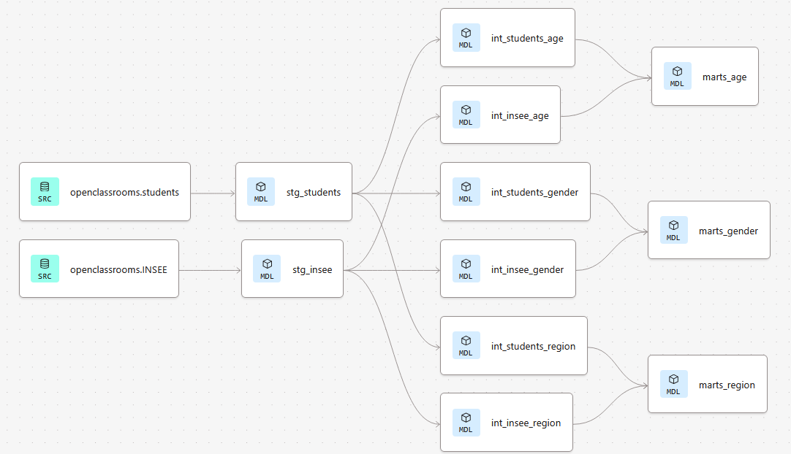

Évolution du profil sociodémographique des étudiants Data — Pipeline DBT + Snowflake

Mission réalisée pour la direction pédagogique d'OpenClassrooms, qui souhaitait objectiver l'évolution du profil sociodémographique des étudiants inscrits aux parcours Data sur plusieurs années (âge, genre, région), afin d'alimenter sa réflexion stratégique sur l'accessibilité et l'égalité des chances. La commanditaire, Lead Data Analyst, avait besoin d'un pipeline de transformation fiable, documenté et reproductible — pas d'une simple analyse ponctuelle — capable d'être réutilisé dans le temps par l'équipe.
- Source interne : données d'inscription des étudiants (identifiant, tranche d'âge, genre déclaré, région, année de début de parcours), chargées dans Snowflake.
- Source externe : données de population de l'INSEE (répartition par âge, genre et région), intégrées pour comparer le profil des étudiants à celui de la population française.
- Contrainte majeure : Il fallait trouver des données comparables avec celles de la plateforme sur le site de l'INSEE mais pour l'ensemble de la population française.
Construction d'un pipeline de transformation avec DBT sur un entrepôt Snowflake — ma première expérience concrète de data engineering, au-delà de l'analyse pure :
- Déclaration des sources de données (étudiants et INSEE) dans des fichiers de configuration
sources.yml, avec documentation complète de chaque colonne. - Construction de modèles en couches (staging → intermediate → marts) pour nettoyer, harmoniser et agréger les données. Chaque modèle DBT est écrit en SQL et compilé en requêtes exécutées directement sur Snowflake, avec des règles explicites (filtrage des années hors périmètre, valeurs de genre manquantes traitées comme "Unknown" plutôt qu'exclues).
- Mise en place de tests DBT automatisés à chaque étape : unicité des clés, cohérence des pourcentages calculés, valeurs autorisées sur les catégories (âge, genre, région).
- Calcul d'un indicateur d'écart (
delta_pct) entre la répartition des étudiants et celle de la population INSEE, pour rendre les résultats immédiatement interprétables par un public non technique. - Documentation du pipeline pour le rendre traçable et reproductible par l'équipe, sans dépendre de moi pour le relancer.
Déploiement de modèles analytiques : Le pipeline de transformation des données génère des tables de présentation finale (Data Marts) comparant dynamiquement la sociologie de la cohorte étudiante à celle de la population nationale. Modélisée sous forme d'écarts de représentativité, l'analyse fait ressortir trois tendances structurelles :
- Analyse générationnelle : Mise en évidence d'une très forte polarisation autour de la tranche des jeunes actifs, contrastant avec un déficit sur les profils les plus âgés par rapport à la moyenne démographique globale.
- Évaluation de la parité : Identification d'un déséquilibre de genre persistant, illustré par une nette sur-représentation masculine. L'étude longitudinale valide en parallèle une nette amélioration de la qualité de collecte, traduite par la réduction drastique des données déclaratives manquantes au fil du temps.
- Cartographie géographique : Constat d'une hyper-concentration des effectifs sur une région, une dynamique corrélée à la centralisation des opportunités professionnelles dans ce secteur.
Assurance qualité automatisée : L'intégration de tests systématiques directement au cœur du pipeline (contrôle d'unicité et d'intégrité logique des indicateurs) garantit à la direction pédagogique la mise à disposition de données fiables, traçables et parfaitement reproductibles à chaque itération.
Je pourrais essayer de croiser les tendances démographiques avec le taux de réussite du parcours, pour voir si elles corrèlent avec les résultats pédagogiques et pas seulement avec les inscriptions.